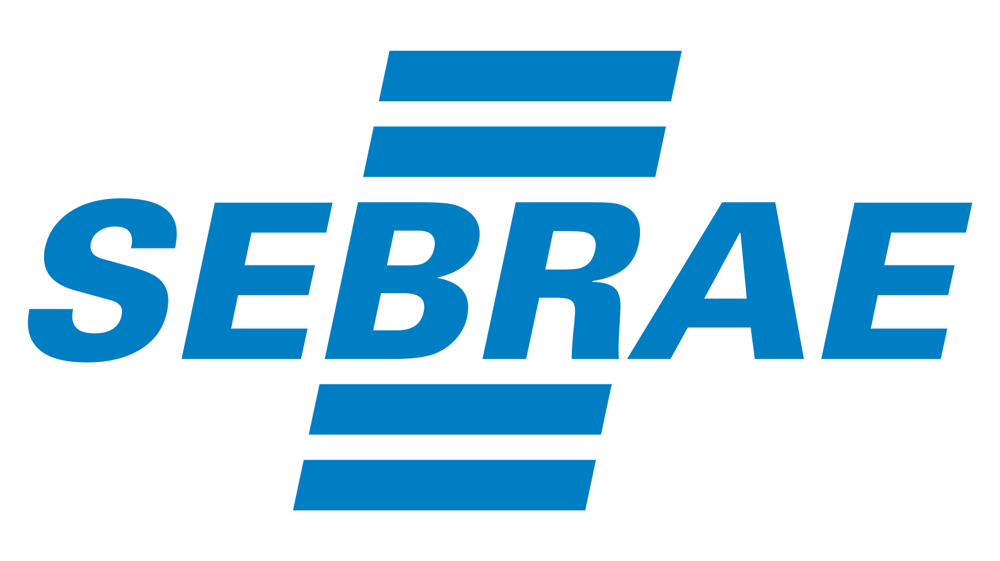

Agenda
09:00:00 - 09:10:00
ABERTURA
Apresentação do Evento, do grupo de usuários e informações gerais.
Palestrante: UaiJUG
09:10:00 - 10:00:00
OTIMIZANDO AS ARQUITETURAS EMPRESARIAIS COM MICROPROFILE
O termo microsserviço, se tornou muito popular. Assim, diversas ferramentas e diversos artigos relacionados ao assunto vem surgindo. Eventualmente pode-se desenvolver microsserviços com java ee, porém os profiles atuais não são a melhor alternativa. Neste contexto foi lançada uma nova iniciativa no mundo java o microprofile, que na sua versão 1.0 utiliza algumas apis do java ee. O microprofile foi um dos tópicos mais comentados no javaone 2016 e como esta em sua fase inicial todos nós podemos participar das discussões e sua evolução.
Palestrante: Otávio Santana
10:10:00 - 11:00:00
AR E VR UMA NOVA REALIDADE
A realidade aumentada e a virtual está invadindo o nosso mundo e mudando a forma com o vemos. Nesta palestra irei abordar um pouco do tema e no final mostrarei como fazer uma pequena aplicação em AR para impressionar seu chefe.
Palestrante: Danilo Oliveira
11:10:00 - 12:00:00
LIDANDO COM NOSQL E JAVA
Volumes de dados e capacidade de processamento como nunca vimos antes: essa é a nossa nova realidade e para tirarmos proveito disso, precisamos também de novas formas de armazenamento de dados. O movimento nosql surgiu em 2009 para trazer novas opções de ferramentas e modelos de dados capazes de atender as necessidades de uma nova geração de aplicações. Nesta trilha, iremos discutir diversas ferramentas nosql, tendências, as últimas novidades da área e como você pode usar essa tecnologia para criar aplicações incríveis
Palestrante: Otávio Santana
12:00:00 - 14:00:00
Neste Horário sairemos todos para almoçar em algum local para aproveitarmos o tempo em um bate papo.
14:00:00 - 14:50:00
APRESENTANDO DESIGN THINKING
Um simples overview sobre a metodologia de inovação, ilustrando quão simples e poderoso o design thinking pode ser, permitindo que as dúvidas de entendimento dispontem com velocidade criando assim uma maior assertividade no desenvolvimento da inovação.
Palestrante: Léo Candido
15:00:00 - 15:50:00
COMO TRANSFORMAR UM PROJETO JEE EM UM MICRO-SERVIÇO, UTILIZANDO O WILDFLY-SWARM
Com o WildFly Swarm, podemos empacotar nossa aplicação JEE e rodá-la de forma simples e descomplicada, sem precisar configurar um servidor de aplicação completo e ainda podemos rodar rapidamente nossa aplicação. Com isso podemos criar micro-serviço de forma rápida, performática e eficaz usando nossa aplicações JEE.
Palestrante: Rogério Fontes
15:50:00 - 16:10:00
PALESTRAS
A confirmar
16:10:00 - 17:00:00
INOVAÇÕES E TENDÊNCIAS EM NUVEM
O ritmo acelerado de inovação nas plataformas de nuvem é um de seus principais benefícios, junto com as reduções de custos e cronogramas. A proposta é que você se concentre cada vez mais em desenvolver seus diferenciais, ao invés de tarefas repetitivas de infraestrutura. Nesta sessão serão apresentados os lançamentos mais recentes e relevantes da Amazon Web Services. As novidades vão desde serviços fundamentais, como virtualização e redes, até os mais avançados, como em big data e internet das coisas. Compartilharemos também as informações sobre os programas de apoio e o recursos para se aprofundar. Venha conhecer as novidades, tirar dúvidas e entender como aproveitar melhor os serviços da Amazon Web Services.
Palestrante: Julio Faerman
17:10:00 - 17:30:00
ENCERRAMENTO
Encerramento e Sorteios
Organização


- 
O evento
-
O evento UaiJUG Last Party vem para encerrar o ano em grande estilo e terá como grande foco as soluções baseadas em Java.
-
Será um evento que terá diversas palestras que vão desde a linguagem Java em SI, como soluções de nuvem e Big Data que utilizam Java e linguagens da JVM.
-
Você que é estudante e está começando agora, temos um grande desconto para que você possa participar do evento. Basta se cadastrar como estudante.
-
O evento será realizado na Universidade Federal de Uberlândia (UFU) - Anfiteatro do Bloco 5S